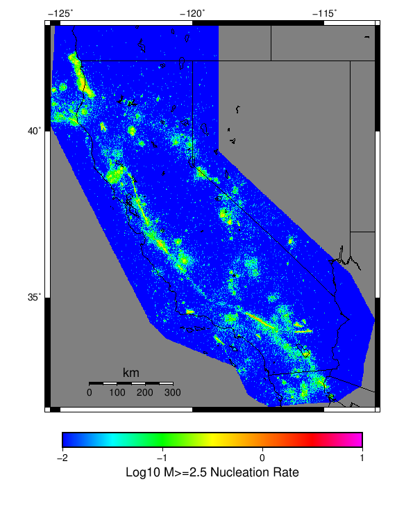

| Spontaneous Only | |
|---|---|
| Num Simulations | 10 |
| Start Time | 2018/01/01 00:00:00 UTC |
| Start Time Epoch Milliseconds | 1514764800000 |
| Duration | 10 Years |
| Includes Spontaneous? | true |
| Trigger Ruptures | (none) |
| Historical Ruptures | (none) |
Legend
| Mag | Mean | 2.5 %ile | 97.5 %ile | Median | Mode | 10 yr Probability |
|---|---|---|---|---|---|---|
| M≥2.5 | 2180.36 | 1434.9 | 3652.4 | 2048.0 | 2173.7 | 1.0 |
| M≥2.6 | 1732.95 | 1140.2 | 2897.7 | 1625.8 | 1729.1 | 1.0 |
| M≥2.7 | 1376.68 | 906.9 | 2305.1 | 1285.3 | 1375.4 | 1.0 |
| M≥2.8 | 1093.91 | 724.8 | 1823.5 | 1024.9 | 1098.3 | 1.0 |
| M≥2.9 | 870.32 | 572.1 | 1459.2 | 817.3 | 868.9 | 1.0 |
| M≥3 | 690.73 | 449.4 | 1163.3 | 646.6 | 690.9 | 1.0 |
| M≥3.1 | 548.59 | 360.6 | 922.7 | 508.6 | 545.2 | 1.0 |
| M≥3.2 | 435.63 | 288.6 | 728.0 | 399.6 | 435.6 | 1.0 |
| M≥3.3 | 345.91 | 227.4 | 578.0 | 315.0 | 347.0 | 1.0 |
| M≥3.4 | 274.81 | 181.8 | 460.9 | 246.6 | 275.2 | 1.0 |
| M≥3.5 | 218.34 | 142.7 | 365.5 | 199.0 | 219.6 | 1.0 |
| M≥3.6 | 173.0 | 112.5 | 287.4 | 160.8 | 170.9 | 1.0 |
| M≥3.7 | 137.53 | 89.1 | 225.2 | 128.9 | 135.9 | 1.0 |
| M≥3.8 | 109.84 | 70.3 | 180.1 | 104.3 | 109.6 | 1.0 |
| M≥3.9 | 87.35 | 55.9 | 142.0 | 82.3 | 88.9 | 1.0 |
| M≥4 | 69.63 | 44.6 | 115.6 | 65.8 | 70.9 | 1.0 |
| M≥4.1 | 55.22 | 37.0 | 91.3 | 52.8 | 53.7 | 1.0 |
| M≥4.2 | 43.81 | 28.5 | 71.3 | 42.5 | 47.5 | 1.0 |
| M≥4.3 | 34.5 | 21.8 | 57.0 | 33.1 | 34.0 | 1.0 |
| M≥4.4 | 27.14 | 16.8 | 44.8 | 25.3 | 27.8 | 1.0 |
| M≥4.5 | 21.23 | 12.5 | 35.7 | 19.6 | 19.6 | 1.0 |
| M≥4.6 | 16.72 | 8.6 | 28.3 | 16.4 | 17.7 | 1.0 |
| M≥4.7 | 13.47 | 7.0 | 23.1 | 13.2 | 13.9 | 1.0 |
| M≥4.8 | 10.83 | 5.3 | 18.5 | 10.7 | 11.8 | 1.0 |
| M≥4.9 | 8.55 | 4.4 | 14.2 | 8.4 | 9.4 | 1.0 |
| M≥5 | 6.71 | 3.1 | 11.8 | 6.3 | 6.6 | 1.0 |
| M≥5.1 | 5.4 | 2.8 | 9.9 | 5.2 | 5.4 | 1.0 |
| M≥5.2 | 4.37 | 2.8 | 7.9 | 4.1 | 4.6 | 1.0 |
| M≥5.3 | 3.49 | 2.2 | 6.1 | 3.4 | 3.4 | 1.0 |
| M≥5.4 | 2.76 | 1.7 | 4.7 | 2.7 | 2.9 | 1.0 |
| M≥5.5 | 2.14 | 1.1 | 4.1 | 2.0 | 2.1 | 1.0 |
| M≥5.6 | 1.76 | 1.0 | 3.3 | 1.6 | 1.6 | 1.0 |
| M≥5.7 | 1.41 | 0.8 | 2.7 | 1.3 | 1.3 | 1.0 |
| M≥5.8 | 1.1 | 0.4 | 2.1 | 1.0 | 1.0 | 1.0 |
| M≥5.9 | 0.87 | 0.1 | 1.5 | 0.9 | 0.9 | 1.0 |
| M≥6 | 0.7 | 0.1 | 1.3 | 0.7 | 0.8 | 1.0 |
| M≥6.1 | 0.55 | 0.1 | 0.8 | 0.6 | 0.7 | 1.0 |
| M≥6.2 | 0.46 | 0.1 | 0.7 | 0.5 | 0.6 | 1.0 |
| M≥6.3 | 0.41 | 0.0 | 0.7 | 0.4 | 0.4 | 0.9 |
| M≥6.4 | 0.32 | 0.0 | 0.6 | 0.3 | 0.3 | 0.9 |
| M≥6.5 | 0.22 | 0.0 | 0.3 | 0.2 | 0.3 | 0.9 |
| M≥6.6 | 0.17 | 0.0 | 0.3 | 0.2 | 0.3 | 0.8 |
| M≥6.7 | 0.13 | 0.0 | 0.3 | 0.1 | 0.2 | 0.7 |
| M≥6.8 | 0.07 | 0.0 | 0.2 | 0.0 | 0.0 | 0.4 |
| M≥6.9 | 0.06 | 0.0 | 0.2 | 0.0 | 0.0 | 0.4 |
| M≥7 | 0.06 | 0.0 | 0.2 | 0.0 | 0.0 | 0.4 |
| M≥7.1 | 0.03 | 0.0 | 0.1 | 0.0 | 0.0 | 0.3 |
| M≥7.2 | 0.02 | 0.0 | 0.1 | 0.0 | 0.0 | 0.2 |
| M≥7.3 | 0.01 | 0.0 | 0.1 | 0.0 | 0.0 | 0.1 |
| M≥7.4 | 0.01 | 0.0 | 0.1 | 0.0 | 0.0 | 0.1 |
| M≥7.5 | 0.01 | 0.0 | 0.1 | 0.0 | 0.0 | 0.1 |
| M≥7.6 | 0.01 | 0.0 | 0.1 | 0.0 | 0.0 | 0.1 |
| M≥7.7 | 0.01 | 0.0 | 0.1 | 0.0 | 0.0 | 0.1 |
| M≥7.8 | 0.0 | 0.0 | 0.0 | 0.0 | 0.0 | 0.0 |
| M≥7.9 | 0.0 | 0.0 | 0.0 | 0.0 | 0.0 | 0.0 |
| M≥8 | 0.0 | 0.0 | 0.0 | 0.0 | 0.0 | 0.0 |
| M≥8.1 | 0.0 | 0.0 | 0.0 | 0.0 | 0.0 | 0.0 |
| M≥8.2 | 0.0 | 0.0 | 0.0 | 0.0 | 0.0 | 0.0 |
| M≥8.3 | 0.0 | 0.0 | 0.0 | 0.0 | 0.0 | 0.0 |
| M≥8.4 | 0.0 | 0.0 | 0.0 | 0.0 | 0.0 | 0.0 |
| M≥8.5 | 0.0 | 0.0 | 0.0 | 0.0 | 0.0 | 0.0 |
| M≥8.6 | 0.0 | 0.0 | 0.0 | 0.0 | 0.0 | 0.0 |
| M≥8.7 | 0.0 | 0.0 | 0.0 | 0.0 | 0.0 | 0.0 |
| M≥8.8 | 0.0 | 0.0 | 0.0 | 0.0 | 0.0 | 0.0 |
| M≥8.9 | 0.0 | 0.0 | 0.0 | 0.0 | 0.0 | 0.0 |
| M≥9 | 0.0 | 0.0 | 0.0 | 0.0 | 0.0 | 0.0 |
| Min Mag | Complete Catalog (including spontaneous) |
|---|---|
| All Supra. Seis. |  |
| M≥6.5 |  |
| M≥7 |  |
| M≥7.5 |  |
First 10 of 34 with matching ruptures shown
| Parent Name | Total Mean Annual Rate | Total 10 Year Prob |
|---|---|---|
| San Andreas (Creeping Section) 2011 CFM | 0.04 | 0.3 |
| San Andreas (Mojave S) | 0.03 | 0.3 |
| San Andreas (Parkfield) | 0.03 | 0.3 |
| Calaveras (Central) 2011 CFM | 0.02 | 0.2 |
| Green Valley 2011 CFM | 0.02 | 0.1 |
| Hunting Creek - Berryessa 2011 CFM | 0.02 | 0.1 |
| San Andreas (San Bernardino N) | 0.02 | 0.2 |
| Bartlett Springs 2011 CFM | 0.01 | 0.1 |
| Bear River fault zone | 0.01 | 0.1 |
| Big Lagoon - Bald Mtn 2011 CFM | 0.01 | 0.1 |
First 10 of 21 with matching ruptures shown
| Parent Name | Total Mean Annual Rate | Total 10 Year Prob |
|---|---|---|
| San Andreas (San Bernardino N) | 0.02 | 0.2 |
| Bartlett Springs 2011 CFM | 0.01 | 0.1 |
| Big Lagoon - Bald Mtn 2011 CFM | 0.01 | 0.1 |
| Blue Cut | 0.01 | 0.1 |
| Calaveras (Central) 2011 CFM | 0.01 | 0.1 |
| Calaveras (No) 2011 CFM | 0.01 | 0.1 |
| Cerro Prieto | 0.01 | 0.1 |
| Eaton Roughs 2011 CFM | 0.01 | 0.1 |
| Franklin 2011 CFM | 0.01 | 0.1 |
| Green Valley 2011 CFM | 0.01 | 0.1 |
| Parent Name | Total Mean Annual Rate | Total 10 Year Prob |
|---|---|---|
| Big Lagoon - Bald Mtn 2011 CFM | 0.01 | 0.1 |
| Blue Cut | 0.01 | 0.1 |
| Calaveras (Central) 2011 CFM | 0.01 | 0.1 |
| Calaveras (No) 2011 CFM | 0.01 | 0.1 |
| Franklin 2011 CFM | 0.01 | 0.1 |
| Hayward (So) extension 2011 CFM | 0.01 | 0.1 |
| San Andreas (Mojave S) | 0.01 | 0.1 |
| San Andreas (San Bernardino N) | 0.01 | 0.1 |
| Trinidad (alt1) | 0.01 | 0.1 |
| Parent Name | Total Mean Annual Rate | Total 10 Year Prob |
|---|---|---|
| Big Lagoon - Bald Mtn 2011 CFM | 0.01 | 0.1 |
| Min Mag | Complete Catalog (including spontaneous) |
|---|---|
| M≥2.5 |  |
| M≥5 |  |
| M≥6 |  |
| M≥7 |  |